Quant Finance Notes
1. Alternative Data
-
- Dessaint, O., T. Foucault, and L. Fresard (2022). Does alternative data improve financial forecasting? The horizon effect. Working paper.
- 假设分析师在进行盈利预测时，需要最优地分配其投入到不同时间尺度预测的精力，从而最小化预测误差以及获取不同时间尺度预测信息的成本这二者之和。另类数据的出现降低了获取短期预测数据的成本，并同时提高了短期预测数据的准确度。因此，它促使分析师将更多的精力投入到获取和分析短期预测信息上，以此来提高短期预测的准确度。然而顾此失彼，由于分析师的精力是有限的，这造成的后果是降低了他们长期预测的准确度。
Wolfe Research | Global Stock Selection with Proprietary Global Trademark Data
- USPTO, foreign applications, Madrid filing, international registration
- Trademark is not a proxy of advertising spending. Firms with very high advertising spending may over-spend and suffer from agency problem.
- Signal transformations: growth rate, vintage ratio (long term number / short term number), long/short lookback window; residualizing size (log revenue) and sector.
- Use life cycle of trademark to construct signals: applications, success rate of application, renewal ratio, trademark age, age dispersion, dispersion in trademark category, secretive foreign priority application (to keep trademark information under protection, and re-file in US using international registration)
- Trademark category to construct linkage.
Wolfe Research | The Intangible Asset Premia
KC (Knowledge Capital): accumulate past R&D spending with discount (perpetual inventory method)
OC (Organizational Capital): accumulate 30% of past SG&A expenses.
IAI (Intangible Asset Intensity), KCI, OCI:
OCI+KCI combined has consistently more relevant than growth factor (as risk factor).
Firm with higher IAI score has higher momentum scores.
Wolfe Research | Patent, Innovation, and Alpha
- Innovation industry: all industries where at least 50% firms have patent grants. High R&D spending (log R&D residualized by log market cap) is negatively correlated to future return, but is positively correlated to future return in innovation industry group.
- Signals:
- number of unique patent class / number of patent
- Inward citation number, unique inward citation assignee; Outward citation number, unique outward citation assignee
- Citation as linkage; patent class as linkage.
- Patent maintenance.
Wolfe Research | Innovation Relevance
Total citations for all patents that a firm has cited to form a firm i's knowledge base (we can normalize within each patent class for citation) where indicator of indicates whether a patent has been cited by firm i, and is the total number of citations of patent at time . Then technological obsolescence is defined as the rate of change over a window .
Investors disagree most on high innovation relevance firms, we can assign higher risk budget to these firms.
-
- Patent Data Challenges: Patent data is valuable but can be problematic due to truncation (not all patents are granted by the end of the study period) and changes in inventor composition over time. (Both patent grants and patent citations).
- Biases in Aggregation: When patent data is aggregated at the firm level, biases can persist even after common adjustment methods are applied.
- Correlation with Firm Characteristics: Patent and citation biases are correlated with firm characteristics such as size, market-to-book ratio, and R&D intensity. 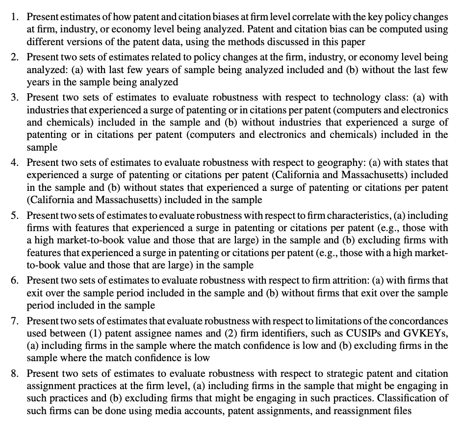
-
- This paper attempts to study the causal effect of examiner busyness on patent quality and firm value. Using a broad set of patent quality measures, we find strong evidence that patents allowed by busy examiners exhibit significantly lower quality.
-
- 科技关联度 (II)
Methodology:
- Patent text analysis: use external sources such as Wikipedia and professional dictionaries to establish the professional termi- nology for every patent in our sample. This process enables us to define two patents as similar if they share the same professional terminology.
- Remove “boilerplates” (i.e., long lists of terminology used in patent texts to illus- trate the invention generality).
- Patent similarity: Two patents' distance is represented as a vector of their common terms weighted by a TFIDF (term frequency– inverse document frequency) variant.
- Firm similarity: log of the sum of similar patent pairs discounted by the age of the newer patent in each pair and normalize it by the log of the product of the total number of patents for each firm in the pair.
基本面解释：For R&D-to-Total Assets and ROA terms, peer firms have both contemporaneous correlation and prediction power.
- 信息扩散缓慢的原因是投资者注意力不足，而不是投资者完全完全意识不到关联。注意力不足意味着投资者未来能认识到关联，因而会有信息的进一步扩散和关联动量。而后者意味着投资者压根就看不到关联的存在，因此也就没关联动量效应了。
-
Data
- The collected news articles are classified into media reservoirs: General, Corporate, FX, and Country Equity.
- Articles are classified into 347 narratives: including 53 pre-specified Journal of Economic Literature (JEL) narratives and around 300 additional narratives. The 347 narratives are classified into 14 narrative tags including Geopolitics, Macro, Micro, etc. The narrative series are provided by MKT MediaStats, LLC.
Construction
- Narrative Intensities: Negative (positive) intensity is the fraction of negative (positive) sentiment articles pertaining to a narrative out of the overall discussion, with a value in [0,1].
- Narrative market beta: whether narratives can explain excess market returns. univariate regressions of the one-month market excess returns on contemporaneous one-month intensity changes.
- stock-level narrative betas: univariate regression of stock return and intensity changes.
Conclusion:
- Financial analysts also tend to underreact to narrative-sensitive stocks
- Narrative momentum is different from price momentum.
-
- Firms are more likely to manipulate their announcements when media coverage is more extensive.
- Negative news is more likely to be reported than positive news.
- The presence of financial journalists can lead to more efficient pricing.
-
- Proxies for Corporate Sales: The authors construct three proxies for real-time corporate sales using distinct information sources: in-store foot traffic (IN-STORE), web traffic to companies' websites (WEB), and consumers' interest level in corporate brands and products (BRAND).
- Predict SUE, SUR, Analyst forecast error.
- Check analyst coverage and media exposure, and market attention level to see if the market consensus really matters, whether we want to trade the surprise from consensus or just the quarterly change.
Wolfe Research | Global shipping and supply chain alpha
- S&P global panjiva supply chain intelleigence (US, Brazil, India, Mexico); FactSet (US only)
- BOL: bill of lading form.
- Features:
- shipping volume (predict sales), (level/growth)
- supplier, product, country of origin (diversity)
- supply-chain network (company's position in supply chain)
- shipping network momentum
Wolfe Research | Alpha insights from global job postings data
- RavenPack dataset (most likely use LinkUp)
- Term construction: job postings level/growth (we can use SOC median salary as importance weight); technical skill intensity, level/growth, uniqueness in skills, adoption of new technical skills, skill importance (TF-IDF).
DB Research | Macro and Micro JobEconomics
- LinkUp job posting dataset: scrape from company website. Data since 2007, description data since 2014. Includes SOC job classification, geolocation data, and technical skills data. Most coverage in the USA.
- Term construction similar for micro.
- Macro: use to predict employment, PMI index, CPI, retail, consumer sentiment.
2. Analyst
Analyst Forecast Bundling Intensity and Earnings Surprise
The authors explore how financial analysts convey information about a company's earnings without necessarily making full revisions to their earnings forecasts. They achieve this by increasing what they term 'bundling intensity,' which refers to the extent to which an analyst's report that includes an earnings forecast revision also includes revisions to price targets and/or recommendations that have the same direction as the earnings forecast revision.
The researchers have developed a measure called BF_Score at the firm level to quantify bundling intensity. Their findings suggest that BF_Score is a significant predictor of earnings surprises based on analyst forecasts. These surprises often result from biases in consensus earnings forecasts, which are influenced by the information analysts communicate through bundling intensity. Below is definition of BR score, where TP is target price.
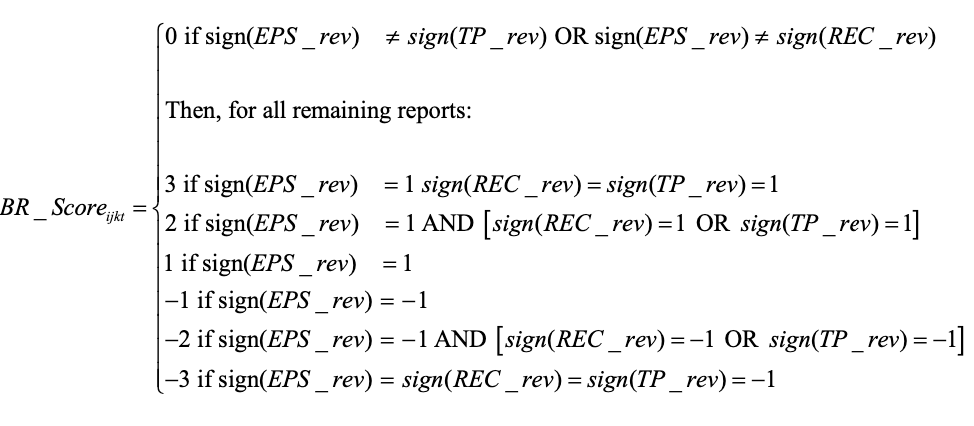
The use of bundling and the predictive power of BF_Score increase during times of higher macroeconomic uncertainty, when analysts have greater incentives to avoid bold revisions to their earnings forecasts.
-
- Firms covered by a larger number of analysts generate fewer patents and patents with lower impact.
- The evidence is consistent with the hypothesis that analysts exert too much pressure on managers to meet short-term goals, impeding firms' investment in long-term innovative projects.
3. Anomalies
- Crowdsourced employer reviews and stock returns
- Extrapolative beliefs in the cross-section: What can we learn from the crowds?
- Chinese Stock Market Shell Value
- Size and Value in China
- Time Series Momentum
- Tracking Retail Investor Activity
- Overnight Return Reserval
- Idiosyncratic Volatility
- Volume
- ESG
- Loughran, Tim, and Bill McDonald. "Measuring firm complexity." Journal of Financial and Quantitative Analysis (2023): 1-28.
- Measure firm complexity: use 10-K filing text data.
- RHS: 374 pre-defined words related to firm complexity.
- LHS: use audit fees (adjusted by size and industry) as complexity proxy.
- Run lasso regression -> identify 50+ words as final firm complexity related set.
- Complexity = percentage of complexity word set in 10-K filiing corpus length.
- Measure firm complexity: use 10-K filing text data.
- Cohen, Lauren, and Dong Lou. "Complicated firms." Journal of financial economics 104.2 (2012): 383-400.
- Complication of a firm is measured by income segment.
- The more complicated the firm, the more pronounced the return predictability. In addition, we find that sell-side analysts are subject to these same information processing constraints, as their forecast revisions of easy-to-analyze firms predict their future revisions of more complicated firms.
4. Asset Pricing
- Q-Factor Model
- Which Beta?
- Stambaugh-Yuan Four Factors
- P-hacking
- Chan, Kam Fong, and Terry Marsh. "Asset pricing on earnings announcement days." Journal of Financial Economics 144.3 (2022): 1022-1042.
- The paper provides evidence that the capital asset pricing model (CAPM) seems to hold on days when influential firms announce earnings, challenging the conventional wisdom that the beta-return relationship is generally flat in the market. The findings have implications for investors, suggesting that strategic trading around earnings announcements could yield significant returns.
5. Behavorial Finance
- Behavioral Finance: an Introduction
- Short- and Long-Horizon Behavioral Factors
- Nominal Price Ilusion
- PEAD
- Financial Statement Related
- Wolfe Research | Seeking alpha from insider transactions
- Form 4 fillings from EDGAR database
- Findings:
- Insider purchases are more effective than sales (might be personal liquidity needs)
- Insider purchases after positive earnings surprise is a strong confirmatory signal
- Collective insider purchases by multiple executives is strong
- Infrequent insider transactions are more informative than reoccurring trades.
6. Crypto
- Decentralized mining in centralized pools
- Majority is not enough: Bitcoin mining is vulnerable
- Blockchain without waste: Proof-of-stake
- A Survey of Attacks on Ethereum Smart Contracts
- Multi-factor in Cryptocurrency
- Kogan, Shimon, et al. "Are cryptos different? evidence from retail trading." Journal of Financial Economics 159 (2024): 103897.
- While investors exhibit contrarian behavior in stocks and gold, they follow a momentum-like strategy with cryptocurrencies, holding onto their investments even after large price movements.
- Retail investors may view cryptocurrency price changes as indicators of the likelihood of future widespread adoption, leading them to update their price expectations in the direction of the price change.
7. Event
- Lottery-like Stocks
- Bargeron, Leonce, and Alice Bonaime. "Why do firms disagree with short sellers? Managerial myopia versus private information." Journal of Financial and Quantitative Analysis 55.8 (2020): 2431-2465.
- Disagreement Definition: The paper defines disagreement as situations where firms engage in significant share repurchases while short interest increases.
- The authors explore whether such repurchases are driven by managerial myopia (an attempt to defend inflated stock prices for short-term gains) or by private information (managers possessing positive, value-relevant information that the market is not yet aware of).
- The paper finds that repurchases are more likely motivated by managers' private information rather than agency issues or a defense of overvalued stock.
- Boudoukh, Jacob, et al. "Information, trading, and volatility: Evidence from firm-specific news." The Review of Financial Studies 32.3 (2019): 992-1033.
- Identified news (relevant to firm events) explains approximately 20%-40% of overnight volatility and 6% during trading hours
8. Linkage
Shared Analyst Coverage: Unifying Momentum Spillover Effects
Market data linkage
- Sarmento, Simão Moraes, and Nuno Horta. "Enhancing a pairs trading strategy with the application of machine learning." Expert Systems with Applications 158 (2020): 113490.
- Stock mktdata -> dimension reduction -> clustering -> within each cluster:
- The pair’s constituents are cointegrated.
- The pair’s spread Hurst exponent reveals a mean-reverting character. ()
- The pair’s spread diverges and converges within convenient periods. (1 < half life < 12)
- The pair’s spread reverts to the mean with enough frequency. (yearly mean-cross >= 12)
- Stock mktdata -> dimension reduction -> clustering -> within each cluster:
- Sarmento, Simão Moraes, and Nuno Horta. "Enhancing a pairs trading strategy with the application of machine learning." Expert Systems with Applications 158 (2020): 113490.
-
- Multi-industry classification using business description (10K + broker report + earnings call) + Bag of Words + LDA
Bagnara, Matteo, and Milad Goodarzi. "Clustering-based sector investing." (2023).
- Data: 94 firm characteristics for CRSP from Dacheng Xiu's Paper (Empirical Asset Pricing with Machine Learning)
- Bisecting K-means clustering
- Clustering feature importance: rank feature variation/PCA on cluster-centroid vector
TT Shi et al. (2023) Production Complementarity and Information Transmission Across Industries
Sales segment + industry input-output relation to construct linkage (Benchmark Input-Output Surveys of the Bureau of Economic Analysis to identify product complementary relationships)
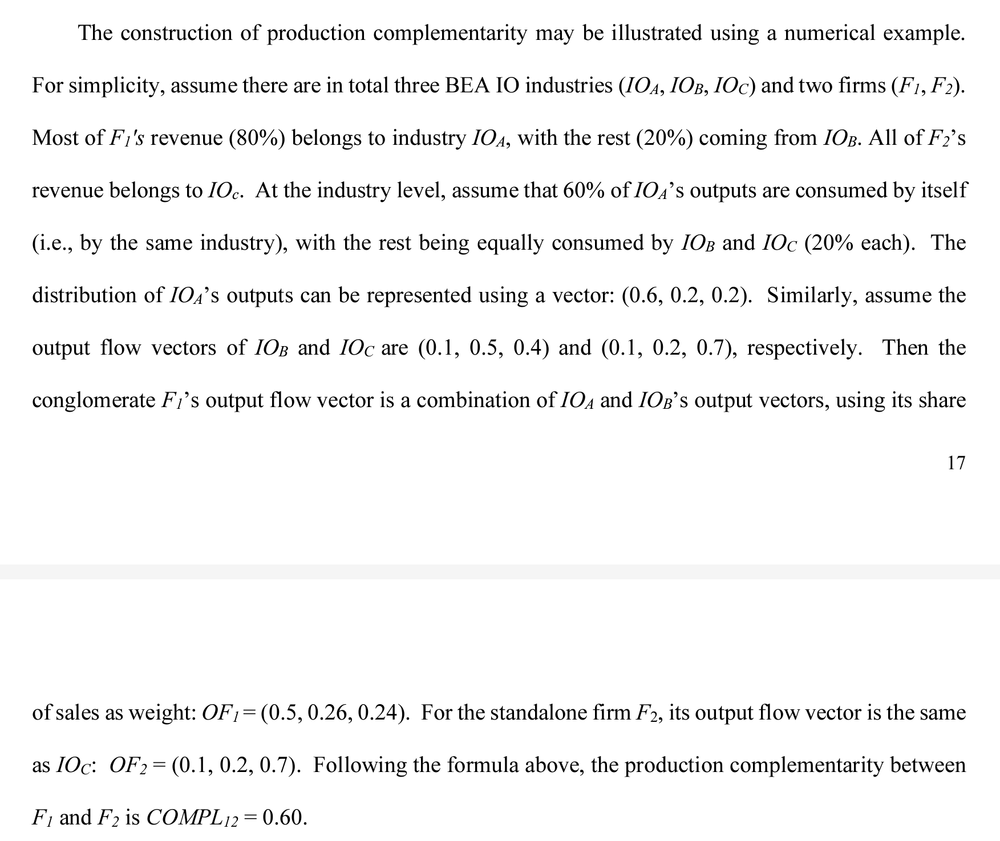
Linkage and information discreteness:
行为金融学中的温水煮青蛙：人的这种缺陷叫做limited attention（有限注意力）。由于人们的认知资源是有限的，在任何给定的时刻，我们的大脑都偏好去处理那些最显著、最重要的信息，而忽视那些不显著的、经济效应微弱的因素。一系列频繁但微小的变化对于人的吸引力远不如少数却显著的变化；因此投资者对于连续信息造成的股价变化反应不足。
信息离散性（information discreteness，ID）：ID 低（说明信息连续性强）的动量才是高质量动量
Da et al. (2014) 说明，与传统动量相比，通过 ID 因子筛选找到的高质量动量能够获得更高的超额收益，且该收益在样本外的持续性更强（这有助于我们降低调仓频率、减少换手率、节约交易成本）。
Information discreteness (ID) serves as a cognitive trigger that reduces investor inattention and improves inter-firm news transmission.
-
Cross-stock momentum: Based on asymmetry in lead-lag linkages and differences between long-run and short-run co-movements.
Factor momentum: The phenomenon where returns of certain factors (like size, value, or industry factors) exhibit momentum.
The asymmetry in cross-stock linkages is a key differentiator from factor momentum. The paper shows that cross-stock momentum is not entirely driven by factor momentum.
The author used Principal Portfolio (PP) Methodology invented in Kelly (JoF 2023) Principal Portfolios. The Principal Portfolio (PP) methodology optimizes portfolio returns by leveraging cross-stock predictability captured in the Prediction Matrix. This approach extends traditional asset pricing by incorporating cross-stock signals.
The Prediction Matrix, , aggregates the relationship between lagged signals () and returns () over a rolling window : Diagonal Elements: Capture own-stock predictability, .
Off-Diagonal Elements: Represent cross-stock predictability, .
Signals () are normalized within to reduce noise and manage outliers. The matrix is lagged by one period to ensure independence between returns and predictors.
SVD: The Prediction Matrix is decomposed via SVD: , : Orthogonal matrices with left () and right () singular vectors.
: Diagonal matrix of singular values () ranked by importance.
This decomposition simplifies identifying key patterns in cross-stock return predictability.
Portfolio Construction: Portfolio weights () are derived by combining signals and the prediction matrix. Optimal weights maximize return subject to a constraint on matrix norm: : Number of leading components retained for dimensionality reduction. Usually .
Principal Portfolios (PPs): Constructed by linear combinations of and , balancing computational simplicity and predictive power.
The PP return is:
-
- The paper leverages a unique feature of stock display on trading platforms in China, where the order of stock display is determined by the stock's listing code. This feature creates an attention spillover effect, where investors are more likely to notice and trade stocks with listing codes adjacent to those of stocks they currently hold.
- The authors propose that overconfident investors, following positive investment experiences, are likely to increase their trading activities and are more likely to direct their attention to neighboring stocks on the display.
-
- Conference call transcripts -> topic model -> firm similarity -> linkage signals
-
- Main idea: linkage from bond market credit-rating comovements.
- This study identifies a "market segmentation" effect between the equity and bond markets, showing that information from bond markets is often not incorporated promptly by equity market investors.
- Firms are connected through "credit-rating comovements," defined as instances when two firms' bond ratings are updated in the same direction within a ±10-day window.
Chen, Xin, and Huaixin Wang. "News Links and Predictable Returns." Available at SSRN 4458612 (2023).
- Main idea: news-implied linkages in China where firms are connected based on shared media coverage.
- News-based links were established by identifying instances where two firms were mentioned in the same article within a 12-month window.
- The authors perform robustness checks to validate these results, including a placebo test using shared media platforms, demonstrating that only specific news stories—not general media coverage—predict future returns.
- They explore linkage complexity, showing stronger predictability when linkages are more complex (e.g., higher numbers of shared stories or connections).
-
- Main idea: high overnight returns for peer stocks predict elevated opening prices for focal stocks, followed by intraday reversals, while peer intraday returns consistently predict positive future intraday returns for focal stocks.
- Retail investors, who trade primarily on overnight information due to news salience, and professional investors, who engage in intraday trading, correcting the market.
- Predictable patterns arise not only from underreaction but from a systematic interplay between the different investor types. Retail-driven overnight price distortions are followed by intraday reversals managed by professionals
Data-driven graph learning
features: 8 in total, MOM and MACD.
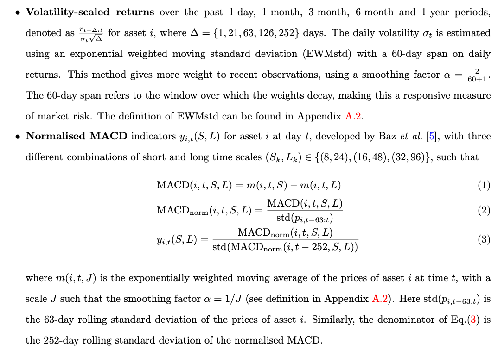
From Kalofolias (AAAI 2016) How to learn a graph from smooth signals, we can define a convex optimization problem: where is the feature matrix with -days lookback window, where is a diagonal matrix with . The graph adjacency matrix we want to estimate represents the network at day t for constructing network momentum, with the -th entry measuring the strength of similarity of individual momentum between asset i and asset j. In the objective function, the first trace term measures the spectral variations of on the learned graph adjacency matrix , encouraging connections between nodes with similar features. It is derived from Laplacian smoothness under the mild assumption that each column of is a low-pass graph signal.
The above is derived from: Consider a matrix , where each row resides on one of m nodes of an undirected graph G. In this way, each of the n columns of X can be seen as a signal on the same graph. A simple assumption about data residing on graphs, but also the most widely used one is that it changes smoothly between connected nodes. An easy way to quantify how smooth is a set of vectors on a given weighted undirected graph is through the function
where denotes the weight of the edge between nodes i and j and is the graph Laplacian, being the diagonal weighted degree matrix. In words, if two vectors and from a smooth set reside on two well connected nodes (i.e. is large), they are expected to have a small distance so that is small.
In our empirical analysis, we combine distinct graphs learned from from five different lookback windows such that trading days as follows: (graph ensemble) .
To mitigate the effects of scale differences in constructing network momentum, which may arise due to the difference in the number of connections certain assets have - with some connected to numerous other assets and others only to a few - we also apply a graph normalisation as follows:
(graph normalisation) , where is a diagonal matrix with .
Another way to solve above equation (#mjx-eqn-
) is described in Pu et al. (2023) Learning to Learn Financial Networks for Optimising Momentum Strategies. 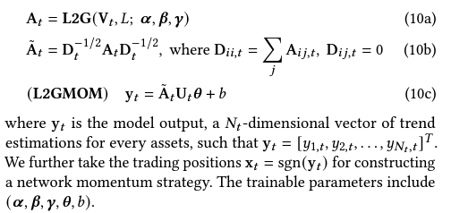
The Algo L2G reformulates optimisationbased graph learning into an unrolling neural network. By leveraging the inherent modularity of neural networks, where different layers can be easily stacked for forward propagation, we propose to incorporate an additional layer into L2G for directly constructing network momentum.
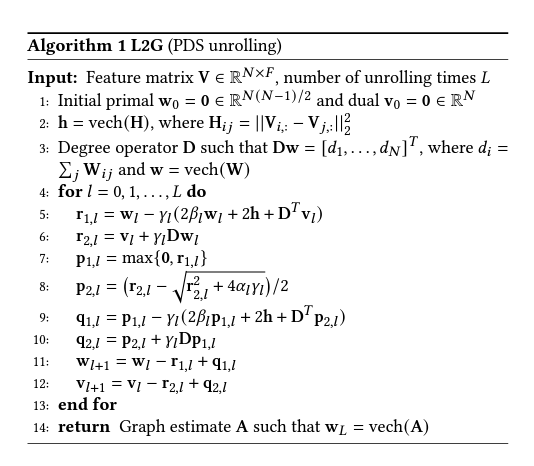
A upgrade version of L2G algorithm is described in Pu et al. (NIPS 2021) Learning to learn graph topologies
-
- Methodology: The authors use a novel test statistic to discriminate between two hypotheses: increased product differentiation (H1) or increased standardization (leading to decreased return comovement) and cost-cutting (leading to increased return comovement) (H2). They exploit changes in stock return comovement following tariff cuts to infer strategic reactions.
- Empirical Findings: The study finds that tariff cuts lead to a significant increase in return comovement, particularly among "followers" within an industry, suggesting a move towards greater standardization and cost-cutting strategies (H2) rather than increased product differentiation (H1).
- Leader definition: sales-based market shares, financial ratios and R&D.
-
- Consider a firm’s competitiveness based on the manner by which other firms mention it on their 10-K filings.
- C-Rank: 10-K cross-mention graph + page-rank algo -> preferred measure of firm-level competition rank
- A firm’s effective competition status stems mostly from competing with companies outside of its sector.
- C-Rank might identify an element of a firm’s risk profile. If the firm is “targeted” by strong competitors, it can increase the uncertainty about the firm’s future performance and value, then the outperformance of high C-Rank firms might manifest compensation for risk.
-
Use factset supply chain data
Customer Momentum: Here we assume that a company has N customers, and let be the sales ratio; thus, customer momentum is defined by the following:
Weighting Method Based on Network Centrality: almost all of the sales ratios are unavailable. Thus, we use network centrality in network theory as the weight of customer momentum. Let be the edge betweenness centrality between supplier i and customer j.
Multilayer Customer Information
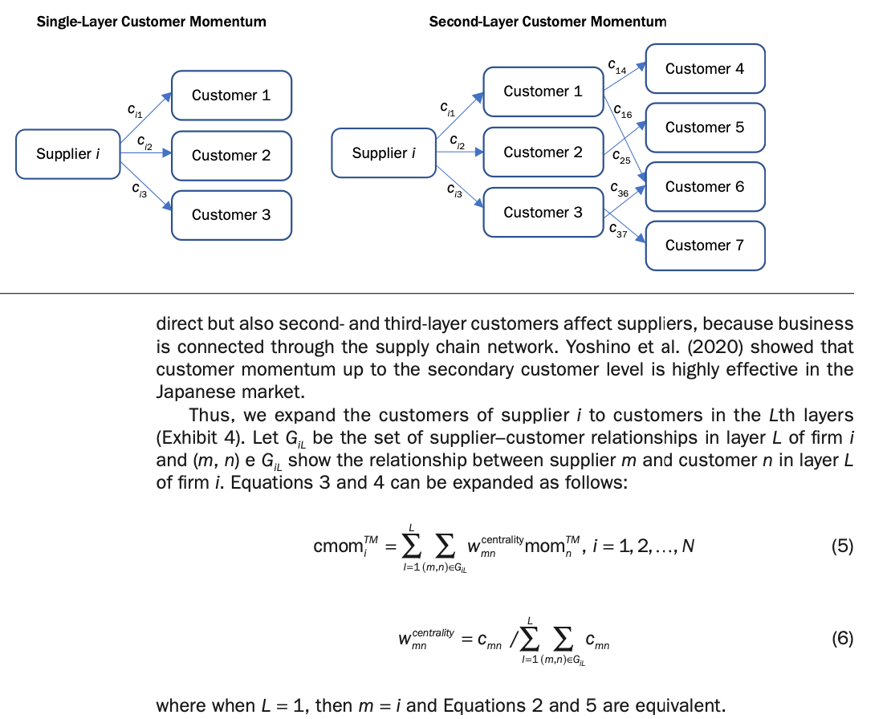
Earnings Propagation Effects through the Global Supply Chain Network
- In this paper, we separate the regression model that examines propagation from customers and the regression model that examines propagation from suppliers and then estimate the coefficients of the following two regression models:
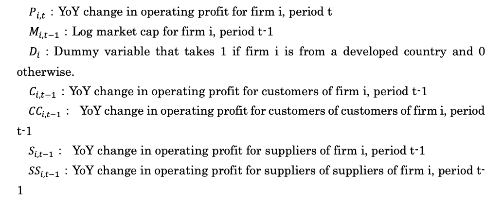
Deep GNN methods
- Wu, Mian, et al. "Firm connection and equity return predictability–Graph-based machine learning methods." The British Accounting Review (2024): 101436.
- Four types of linkage: analyst co-coverage, geographical, industrial, and technological linkage.
- GAT for each linkage type and only through connected firms under each linkage -> aggregate all four linkage output -> LSTM -> output
- Cheng, Rui, and Qing Li. "Modeling the momentum spillover effect for stock prediction via attribute-driven graph attention networks." Proceedings of the AAAI Conference on artificial intelligence. Vol. 35. No. 1. 2021.
- merge technical indicators and textual media features preserving their interactions -> RNN -> GAT -> Output
- Wu, Mian, et al. "Firm connection and equity return predictability–Graph-based machine learning methods." The British Accounting Review (2024): 101436.
-
Previous HAR-DRD method: decomposing the return covariance matrix into the diagonal matrix of realized volatilities and the correlation matrix:
where is the diagonal matrix with the elements of the square roots of on the main diagonal, that is, , and . is the correlation matrix. We can estimate above using
where is the dimensional vectorized version of the lower triangular part of and (resp. ) is computed as (resp. ).
Using graph information, we can estimate variance and correlation as follows,
where is the normalized adjacency matrix. Specifically, is a adjacency matrix indicating the connections between assets with diagonal elements as 0 , and , where . Therefore , represent the neighborhood aggregation over daily, weekly, and monthly horizons. represent the effects from connected neighbors over different horizons. Moreover, we apply the idea of the graph effect to modeling correlations according to the model
where is the normalized adjacency matrix. Specifically, is a adjacency matrix indicating the connections between pairwise correlations with diagonal elements as 0 , and , where .
Choices of graphs
- Variance: Complete, Sector, Graph-Lasso
- Correlation: Complete, Line graph
Given a graph , its line graph is a graph such that
- each node of represents an edge of ;
- two nodes of are adjacent if and only if their corresponding edges share a common endpoint in .
He, Wei, et al. "Similar stocks." Available at SSRN 3815595 (2021).
- Similarity between two stocks is measured by the distance between their characteristics such as price, size, book-to-market, operating profitability, and investment-to-assets.
- Retail investor behavior, including attention spillover and categorical trading, plays a significant role. Retail order imbalance increases for high similar-stock return portfolios, reflecting stronger demand from individual investors.
- The similarity effect is stronger among firms with low institutional ownership, suggesting retail investors are primary drivers.
-
- Joint news has a higher degree of attention spillover than self-mentioned news. Measured by increase in Google search activity and EDGAR filings for connected firms, more so than self news.
- Define the degree of investor attention spillover to a given firm i, from firms connected to i through joint coverage, , as the centrality-weighted (node centrality) sum of abnormal joint news coverage across the connected firms.
- Both JointNews and Market-JointNews (aggregation to market level) istrongly and negatively predicts the one-month-ahead (market) return. It increases the overall attention to the firms and resulting in high valuation and low future stock returns.
-
- When a firm’s economically linked firms have good (bad) news, and its stock price is near (far from) the 52-week high, it has an underreaction to the good (bad) news about economically linked firms.
- The nearness to the 52-week high significantly moderates the predictability of supplier returns based on customer returns. Long-term returns for firms close to their 52-week high are higher when customers exhibit strong performance.
-
- The extent of cross-predictability is negatively related to the level of information in the market, measured by the level of analyst coverage or by the level of institutional ownership.
- Analyst coverage measure: analyst is considered actively engaged in a stock for a 12-month period after making an EPS forecast on that stock.
- Institutional ownership measure: sum the holdings of institutional investors in the stock at a given quarter-end report date and then divide by the number of outstanding shares. An alternative proxy is the number of different institutional investors in the stock.
9. Machine Learning
- Out of Sample Predictability
- Quant Machine Learning
- Time Seris Machine Learning
- NLP in Finance
- Remlinger, Carl, et al. "Expert aggregation for financial forecasting." arXiv preprint arXiv:2111.15365 (2021).
- Liu, Quan, et al. "PREDICTION OF EARNING SURPRISE USING DEEP LEARNING TECHNIQUE."
- Cong, Lin William, Tengyuan Liang, and Xiao Zhang. "Textual factors: A scalable, interpretable, and data-driven approach to analyzing unstructured information." (2019).
- Textual Factor (TF) Generation: The authors generate TFs through three main steps:
- Representing text using vector word embedding (Word2Vec).
- Clustering these vectors using Locality-Sensitive Hashing (LSH) to identify topics.
- Applying topic modeling to identify interpretable textual factors. (Use topic exposure as latent factors, apply standard factor analysis framework)
- Textual Factor (TF) Generation: The authors generate TFs through three main steps:
10. Macro
-
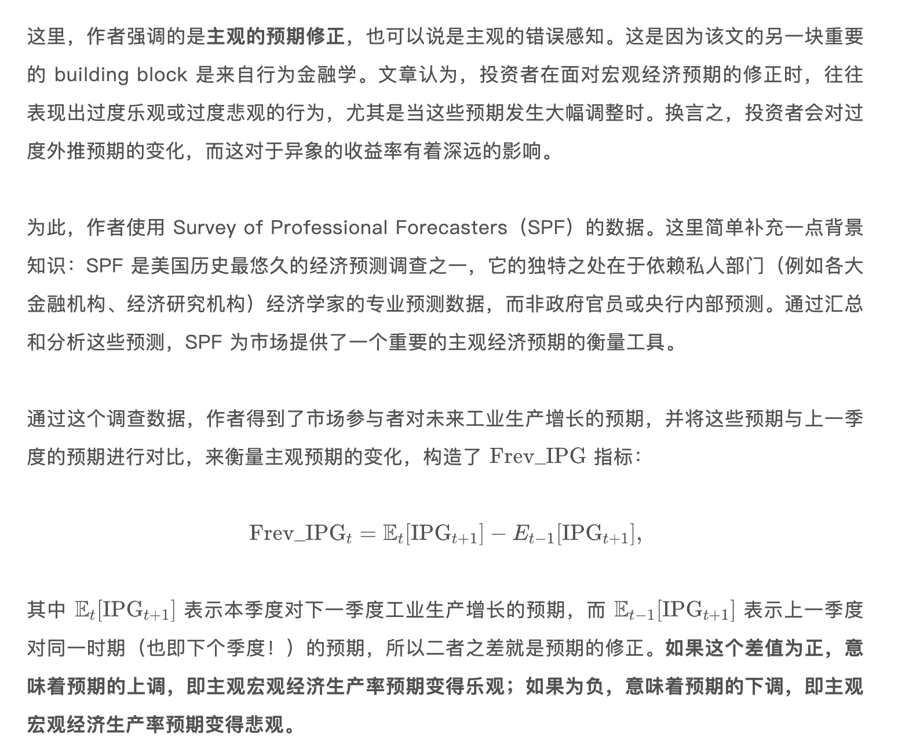
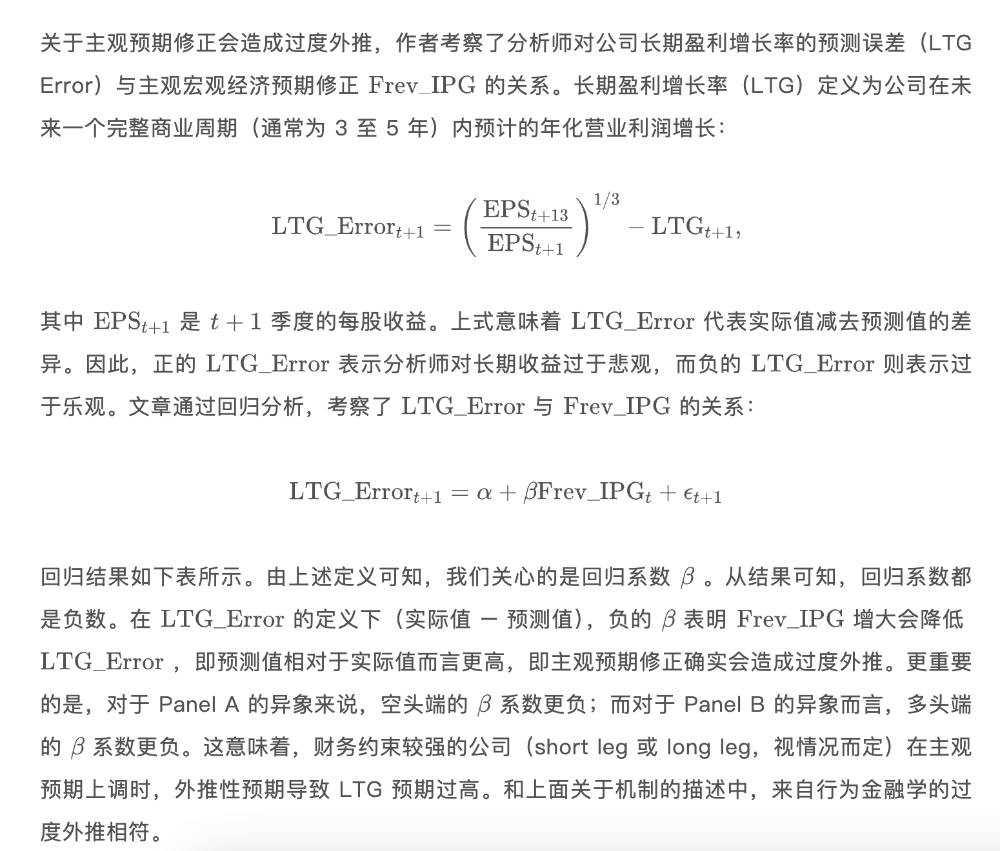
- 当主观预期上调的时候，财务约束更大的公司未来的预期收益率更低。当主观预期下调的时候，财务约束更大的公司未来的预期收益率更高。
- Factor timing
11. Microstructure
12. Miscellaneous
Information Aggregation
Missing Financial Data
Interest Rate
Information Search
Fund Research
-
- A strong Seasonal February reversal exists. The reversal is associated with a spike in turnover for recent loser stocks, which we attribute to an appetite for lottery-like stocks by retail investors around the Chinese New Year season.
- Excluding February, there is a strong mid-to-long term momentum signal in China stock market.
- Momentum construction: at beginning of month T+1, calculate signal as closing price at the end of month T-1 divide by the highest price in the past 52 weeks. Skip one month due to strong short-term reversal in China.
-
- China theme/concept linkage.
-
- Main idea: This study introduces a decomposition model to quantify these effects, aiming to clarify the contributions of each component to stock price movements.
- The authors develop a return variance decomposition model that categorizes stock price variance into four components:
- Noise: Non-informational price movements due to liquidity issues, overreaction, and other trading frictions.
- Private Firm-Specific Information: Informed trading that reveals proprietary insights about a firm.
- Public Firm-Specific Information: Information from publicly available sources, such as news and announcements.
- Market-Wide Information: Broad economic or market news that impacts all firms.
13. Momentum and Factor Timing
Structural Breaks: Advances in Financial Machine Learning Chapter 17
- CUSUM tests: These test whether the cumulative forecasting errors significantly deviate from white noise.
- Explosiveness tests: Beyond deviation from white noise, these test whether the process exhibits exponential growth or collapse, as this is inconsistent with a random walk or stationary process, and it is unsustainable in the long run.
- Right-tail unit-root tests: These tests evaluate the presence of exponential growth or collapse, while assuming an autoregressive specification.
- Sub/super-martingale tests: These tests evaluate the presence of exponential growth or collapse under a variety of functional forms.
A tug of war
- Lou, Dong, Christopher Polk, and Spyros Skouras. "A tug of war: Overnight versus intraday expected returns." Journal of Financial Economics 134.1 (2019): 192-213.
- Lou, Dong, Christopher Polk, and Spyros Skouras. "The day destroys the night, night extends the day: A clientele perspective on equity premium variation." London School of Economics Working Paper (2022).
- Main idea: overnight momentum and intraday reversal.
- High overnight returns tend to continue overnight in future months but exhibit a reversal during the intraday period, suggesting a “tug of war” effect.
- Clientele Hypothesis: The study attributes these effects to different types of investors. This segmentation results in a predictable pattern where:
- Retail Investors drive demand at the open, impacting overnight returns.
- Institutional Investors provide liquidity intraday, which causes reversal effects.
- The study reveals a robust negative relation between past overnight returns and future intraday returns, a pattern they describe as "the day destroys the night." Conversely, intraday returns positively forecast overnight returns ("night extends the day"), reflecting a continuation effect.
-
- CNN on OCHL charts: open, close, high, and low prices, trading volume, and moving average price over the past 5, 20, and 60 days to forecast short (five-day), medium (20-day), and long (60-day) horizons return.
- Transfer learning: they show that the predictive patterns identified by the CNN from daily U.S. stock data transfer well to international markets and to other time scales.
-
- Construct various lag lengths moving average to cover different time horizons, ranging from short-term (3–20 days) to long-term (up to 1000 days).
- Each month, the expected return for each stock is predicted using a cross-sectional regression of returns on the normalized MA signals.
- Then use the estimated coefficients for next month return prediction.
Momentum with ML/DL
- Lim, Bryan, Stefan Zohren, and Stephen Roberts. "Enhancing time series momentum strategies using deep neural networks." arXiv preprint arXiv:1904.04912 (2019).
- Using 8 MOM + MACD features with some look-back window, train DNN to optimize Sharpe/expected return.
- Lim, Bryan, Stefan Zohren, and Stephen Roberts. "Enhancing time series momentum strategies using deep neural networks." arXiv preprint arXiv:1904.04912 (2019).
-
This paper investigates how differences in investor beliefs (disagreement) evolve in response to large information shocks. The authors use a unique dataset and focus on securities constrained by short selling.
Example
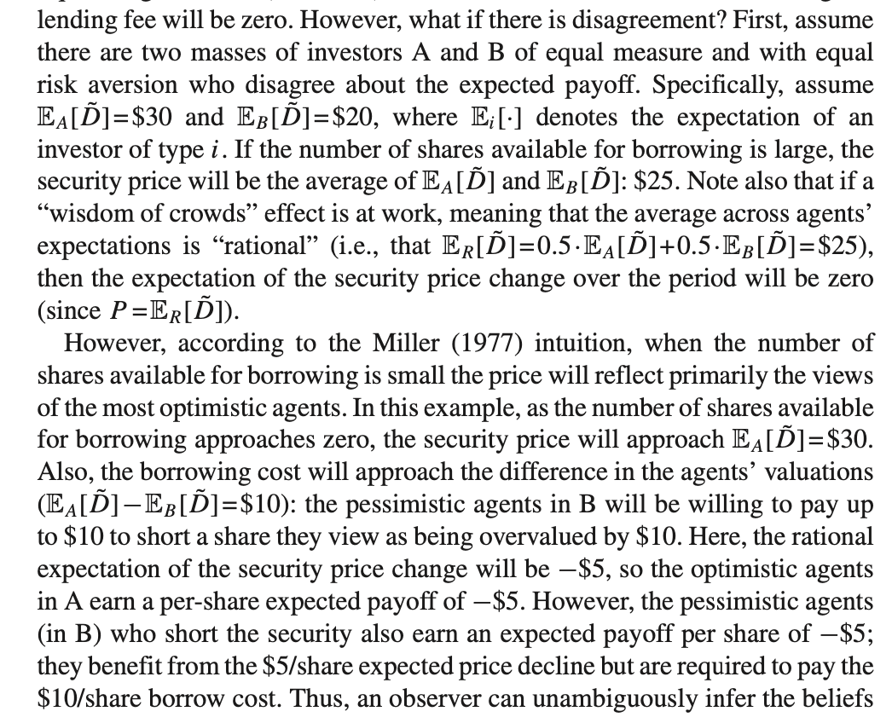
Therefore, with short-sell restriction, the price at t0 will always reveal the view of optimistic agents.
After a positive price shock, the beliefs of the most optimistic agents are too optimistic at time 0 and decay towards rational beliefs over a roughly 5-year period which results in a strong, persistent negative abnormal returns.
After a negative price shocks, the beliefs of the most optimistic agents are also too optimistic, suggesting these agents initially underreact to the new negative information, but that this underreaction is resolved after only 1 year which results in the shorter-lived negative abnormal returns.
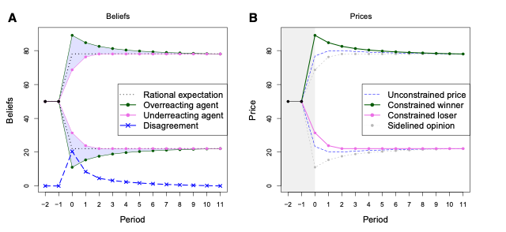
-
Momentum is strongly linked to time-varying risk exposure. The conditional factor model explains a significant portion of the momentum premium.
Candidate models are residual momentum, traditional momentum and conditional factor model defined by IPCA. IPCA estimator is defined as the conditional expectation of the factor component of returns, , where . To focus squarely on the role of time-varying risk exposures, our analysis treats the expected factor return as constant: .
IPCA Kelly, Pruitt, and Su (JFE 2019) explain: where is the future asset return in period , is time-varying observable asset characteristics (instrument vector), is a fixed mapping from observable characteristics to latent risk factors, is the latent factor return. This esti
- In traditional asset pricing, is factor exposure for asset i estimated by Fama-Macbeth and is the (double-sorted) factor (portfolio) return (FF 3/5 factors).
- IPCA allows time-varying observable characteristics, inference from not only return-covariance, and parameter efficient (no need to estimate factor exposure, but mapping). It is similar to BARRA model but maps to low-dimentional latent risk factor space.
- Kelly, Pruitt, and Su (JFE 2019) propose to estimate recursively
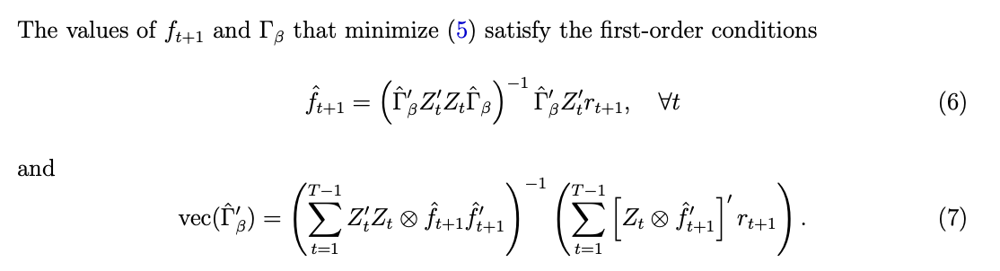
- The linear form IPCA has been extended to DNN in Gu, Shihao, Bryan Kelly, and Dacheng Xiu. "Autoencoder asset pricing models." Journal of Econometrics 222.1 (2021): 429-450.
-
- Individual investors are more likely to sell stocks near the 52WH due to the disposition effect (a tendency to sell assets that have increased in value) and anchoring bias (relying too heavily on the 52WH as a reference point).
- Stocks that experience high levels of limit order selling by individual investors at and around the 52WH tend to have abnormally high returns in the period following the 52WH.
14. NLP
- Wolfe Research | Text mining unstructured corporate filing data
- EDGAR 10-K and 10-Q filings (by section comparison)
- Features:
- Sentiment and tone analysis
- chanes in sentiment
- distance measures (YoY embedding/BoW)